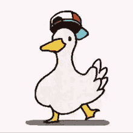

As imagens são uma parte essencial da web moderna, tornando as páginas mais atrativas, envolventes e informativas.
Cuidado Com Copyright©, quando for pegar alguma imagem da web, veja se o autor deu o direito de uso livre da imagem.
Em nossos sites iremos na maioria das vezes trabalhar com esses formatos de imagem que esta abaixo, onde cada um tem sua vantagem e desvantagem, depende da necessidade do criador ou do cliente.
JPEG (Joint Photographic Experts Group) é um formato de compressão de imagem amplamente utilizado na web. Ele oferece uma boa relação entre qualidade e tamanho de arquivo, permitindo que as imagens sejam compactadas para tamanhos razoáveis sem perder muita qualidade visual. No entanto, o formato JPEG utiliza compressão com perdas, o que significa que parte da informação da imagem é descartada, resultando em uma diminuição no detalhamento e na qualidade da imagem. É ideal para fotografias e imagens com variações suaves de cores.
PNG (Portable Network Graphics) é um formato de imagem popular na web que oferece alta qualidade e suporte à transparência. Ao contrário do formato JPEG, o PNG utiliza compressão sem perdas, o que significa que não há perda de qualidade durante o processo de compressão. Isso é particularmente útil para imagens com áreas planas de cores sólidas ou com elementos gráficos como logotipos, ícones ou gráficos vetoriais. Além disso, o PNG suporta transparência, permitindo que partes da imagem sejam transparentes, o que é útil para sobrepor imagens em diferentes fundos. No entanto, como o PNG não utiliza compressão com perdas, os arquivos tendem a ser maiores do que os arquivos JPEG.
GIF (Graphics Interchange Format) é um formato de imagem amplamente utilizado na web, conhecido por suportar animações e sequências de imagens. O GIF é capaz de armazenar múltiplas imagens em um único arquivo, criando a ilusão de movimento quando essas imagens são reproduzidas em sequência. Isso torna o GIF uma escolha popular para gráficos animados simples, como banners, botões ou avatares. Além disso, o GIF também suporta transparência, permitindo que partes da imagem sejam transparentes, o que é útil para criar efeitos de sobreposição em páginas da web. No entanto, o GIF possui uma limitação de cores de 8 bits, o que significa que pode ter uma qualidade inferior quando comparado a outros formatos de imagem, como JPEG ou PNG, que suportam uma maior variedade de cores. Além disso, os arquivos GIF tendem a ser relativamente grandes, especialmente quando contêm muitas imagens ou animações longas.
Exite tamanho certo para uma imagem?
Nao, mas lembre-se que quanto maior for a imagem mais pesada ela vai ser e com isso acarreta na velocidade do site e o google nao é muito legal com sites considerados "lentos"; O tamanho maximo de largura deve ser de 1500 a altura nao se preocupa pois a maioria dos apps de edicao de imagem ja fazem automaticamente.
Outro ponto importante é a resolucao, uma resolucao entre 70 e 96 pixels ja é o suficiente, isso muda caso seu publico alvo ou cliente realmente precise de imagens extremamente nitidas com uma resolicao perfeita.
Nunca gere a maior imagem possivel, isso no fim das contas acaba apenas inflando sua pagina, e prejudicando o acesso, pois lembre-se vivemos em um pais de "terceiro mundo" e nem todos tem acesso a uma internet decente, e tambem nao adianta pegar uma imagem muito grande e editar no css, pois o peso dela sempre vai ser o original, por isso o recomendado é sempre trabalhar com diversos tamnanhos de imagem. Voce vera isso mais abaixo.
A tag <img> em HTML é usada para exibir imagens em uma página da web. Ela requer o atributo src para especificar o caminho da imagem e o atributo alt para especificar o conteudo dessa imagem, tambem permite atributos opcionais,como css ou javascript.
<img src="" alt="">
Imagem PNG de coracao:
JPEG Cerebro
Gif Pato
|
|
 |
*apenas lembre-se que no momento em que o lugar que hospeda cair a imagem corrompe.
PNG Miranha
JPEG Macaco Buxim chei
GIF Garen
 |
 |
 |
Agora que voce sabe que existe duas formas fica a seu criterio e necessidade, a de baixo é mais leve porem sempre corre o risco de perder a imagem.
Favicon basicamente é o icone que fica nas abas do seu navegador.
para colocar um favicon voce precisa que a imagem de preferencia seja png e depois disso converta ela para .ICO, apos isso voce ira utilizar o seguinte codigo
<link rel="shortcut icon" href="A imagem que vc quer.ico" type="image/x-icon">
Nesse Site utilizamos essa imagem como guia.
Como nos sabemos, cada vez mais temos mais e mais eletronicos rodeando nossa vida, e com isso tambem acabamos tendo muito mais formas de acessar a internet, entao com isso nos temos que adaptar nosso site cada vez mais para todos os tipo de aceesos seja em um celular mini ou em uma smart tv de 50 polegadas.
Como falado antes, precisamos adaptar nossas midias para diversos formatos possiveis, entao a tag <PICTURE> junto da tag <Source> é utilizada, para ver o exemplo de imagem se adaptando clique no link abaixo, pois como temos uma imagem muito grande ela ia acabar poluindo o site.
Sempre que for usar essa tag, lembre-se de ou deixar as imagens em sequencia crescente ou decrescente de tamanho.
Aqui temos tres tipos de tamanhos.
*aumente e diminua o zoom para ver os tipos de imagem
Pois alguns em alguns dispositivos a imagem pode nao estar 100% na tela, e todos nos sabemos como é chato ficar fazendo rolagem lateral.
O que ele esta fazendo?
Ao abrir a tag <Picture> nos adicionamos a primeira imagem(lembre-se da ordem de tamanhos), feito isso, adicionamos a tag <Source>.
Source está sendo usada dentro de uma estrutura picture para fornecer diferentes imagens de origem dependendo da largura da tela do dispositivo.
A atribuição media="(max-width:750px )" define uma condição de mídia na qual a imagem especificada será utilizada. Nesse caso, a imagem com o caminho "Imagem/Imagens/imgP.png" será usada quando a largura da tela for igual ou menor que 750 pixels e aImagem/Imagens/imgM.png quando a largura da tela for igual ou menor que 1050px.
<picture>
<source media="(max-width:750px )" srcset="Imagem/Imagens/imgP.png">
<source media="(max-width:1050px )" srcset="Imagem/Imagens/imgM.png">
<img src="Imagem/Imagens/imgG.png" alt="fleximg">
</picture>